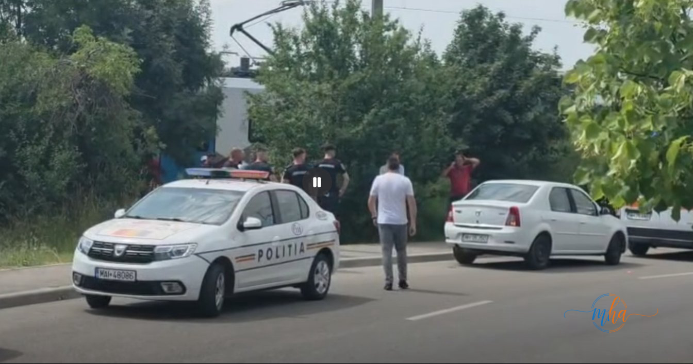

Un grav accident feroviar s-a produs în această dimineață în municipiul Drobeta-Turnu Severin, în zona Cetății Medievale. Un bărbat în vârstă de aproximativ 60 de ani și-a pierdut viața după ce a fost lovit de un tren în timp ce încerca să traverseze calea ferată.
Potrivit primelor informații, victima s-ar fi angajat în traversarea liniilor de cale ferată fără să observe apropierea garniturii. Trenul nu a mai putut fi oprit la timp, iar impactul a fost extrem de violent.
În urma coliziunii, bărbatul a suferit leziuni incompatibile cu viața, echipajele medicale sosite la fața locului neputând face altceva decât să constate decesul.
🚨 Pe scurt
| Locație | Zona Cetății Medievale, Drobeta-Turnu Severin |
| Victimă | Bărbat, aproximativ 60 de ani |
| Tren implicat | Tren de persoane, Drobeta-Turnu Severin → București |
| Ora plecării trenului din gară | 11:10 |
| Stadiu anchetă | În desfășurare |
Intervenția echipajelor de urgență
La locul tragediei au intervenit echipaje de poliție, pompieri și personal medical, zona fiind securizată pentru desfășurarea cercetărilor. Polițiștii urmează să stabilească împrejurările exacte în care s-a produs accidentul.
Circulația feroviară în zonă a fost afectată temporar pe durata intervenției și a cercetărilor efectuate de autorități.

Echipaj de poliție la fața locului | Foto: MehedintiAzi.ro
Anchetatorii la locul tragediei | Foto: MehedintiAzi.ro
Trenul implicat în accident
Trenul implicat în accident este un tren de persoane care plecase din Gara Drobeta-Turnu Severin la ora 11:10 și se deplasa către București. Mecanicul locomotivei nu ar fi avut posibilitatea să evite impactul, distanța de frânare fiind mult prea mare pentru a opri garnitura la timp.
Potrivit unor martori aflați în apropierea locului tragediei, bărbatul s-ar fi aflat deja pe șina de cale ferată în momentul apropierii garniturii. Din acest motiv, anchetatorii iau în calcul mai multe variante privind împrejurările producerii accidentului, care urmează să fie confirmate sau infirmate în urma cercetărilor desfășurate de polițiști.
Polițiștii continuă cercetările pentru a stabili cu exactitate circumstanțele în care s-a produs tragedia. MehedintiAzi.ro va reveni cu informații pe măsură ce ancheta avansează.
📞 Ai nevoie de ajutor sau cunoști pe cineva care trece printr-o perioadă grea?
Telefonul Verde Antisuicid: 0800 801 200 (gratuit, non-stop) sau Linia unică de urgență 112. Nu ești singur — există oameni pregătiți să te asculte și să te ajute.